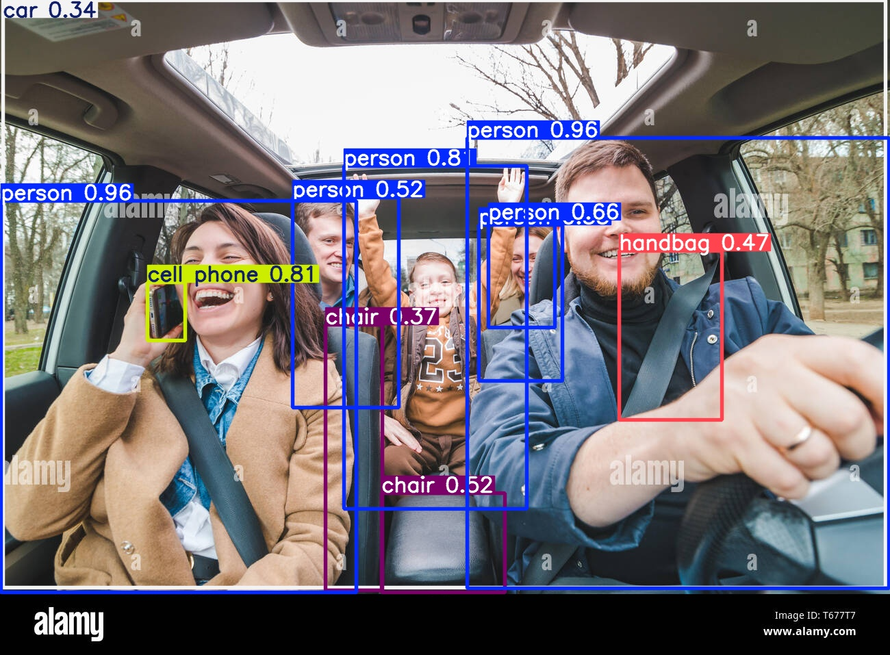

Object Detection
Detects objects using YOLOv9
Sample Outputs
Image Detection
Video Detection
Webcam Detection
YOLOv9 Model Details
YOLOv9 is a state-of-the-art object detection model known for its speed and accuracy
- Based on the YOLO (You Only Look Once) architecture
- Uses deep learning techniques for real-time object detection
- Supports custom training for detecting user-defined objects
YOLOv9 represents a pivotal development in real-time object detection, offering significant improvements in terms of efficiency, accuracy, and adaptability. By addressing critical challenges through innovative solutions like PGI and GELAN, YOLOv9 sets a new precedent for future research and application in the field. As the AI community continues to evolve, YOLOv9 stands as a testament to the power of collaboration and innovation in driving technological progress.